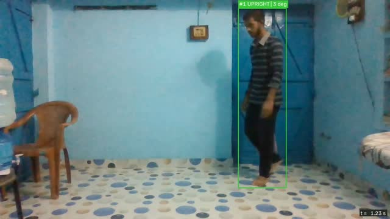
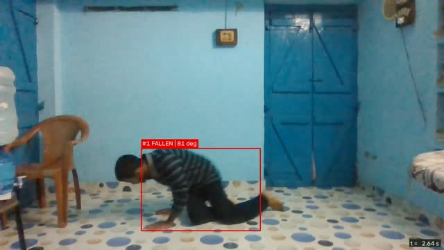
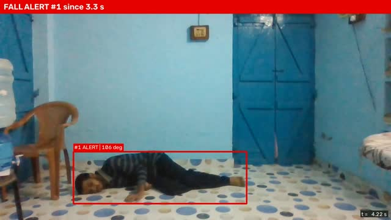

Regras em vez de um classificador treinado
Cada limiar tem significado físico e pode ser ajustado pela linha de comando, e cada alerta pode ser explicado pelo traço. Não é preciso um dataset de quedas para começar.
Gera um alerta cerca de um segundo depois de a pessoa ficar deitada no chão após uma queda. Pontos-chave de pose do YOLO e rastreamento de várias pessoas alimentam uma pequena máquina de estados por pessoa, guiada por regras legíveis: ângulo do tronco, formato do corpo e velocidade do quadril. Sem dados de treino e sem GPU: roda na CPU de um notebook e explica cada alerta que gera.
Cada quadro passa por um modelo de pose com rastreador, então cada pessoa mantém um ID. A partir dos ombros e do quadril, o pipeline calcula três atributos simples, e uma máquina de estados por pessoa só gera o alerta depois que a postura deitada se mantém, o que filtra abaixar, sentar e agachar rapidamente.
A máquina de estados é o que segura os alarmes falsos: depois da queda, a postura deitada precisa durar um segundo para o alerta disparar, e o alerta se encerra sozinho quando a pessoa se levanta.
O gráfico abaixo é o traço real gravado com --trace-csv para o clipe da demonstração. O ângulo do tronco passa de 45° quando a pessoa cai, o estado vai para FALLEN quase na hora e o alerta abre um segundo depois, em 3,31 s.



| Execução | Acertos | Não detectadas | Alarmes falsos | Atraso do alerta |
|---|---|---|---|---|
| imgsz 1280, conf 0,30 (execução publicada) | 9 / 9 | 0 | 0 | 1,5–2,6 s (dois em +4,0 s) |
| imgsz 1280, conf 0,35 | 8 / 9 | 1 | 0 | 1,5–2,6 s |
| imgsz 640, conf 0,35 | 6 / 9 | 3 | 0 | 1,5–2,4 s |
Compilação: oito quedas do GMDCSA24 (três pessoas, dia e noite, quedas laterais, para frente e para trás) e uma queda externa na neve.
Clipes de campainha e de celular na mão, pessoas pequenas, vídeo vertical e neve. Com --model yolo26s-pose.pt --conf 0.20 (além do filtro por pose e do reparo de troca de ID, ambos ativos por padrão), os três escorregões geram alerta, e cada alerta some assim que a pessoa sai da tela.
| Modelo de pose | imgsz | conf | Alertas (3 quedas) |
|---|---|---|---|
| yolo11n-pose (padrão) | 640 | 0,30 | 1 / 3 |
| yolo26s-pose | 640 | 0,20 | 3 / 3 |
| yolo26s-pose | 1280 | 0,20 | 2 / 3 |
| yolo26m-pose | 640 | 0,20 | 1 / 3 |
Trocar para o modelo mais novo, o yolo26s-pose, foi o maior ganho em vídeos pequenos e de celular: ele mantém a pessoa caída no chão detectada por muito mais tempo que o modelo nano.
git clone https://github.com/karemdm/fall-detection-alert.git
cd fall-detection-alert
python3 -m venv .venv
source .venv/bin/activate
pip install -r requirements.txt
pip install -e .git clone https://github.com/karemdm/fall-detection-alert.git
cd fall-detection-alert
python -m venv .venv
.venv\Scripts\Activate.ps1
pip install -r requirements.txt
pip install -e .git clone https://github.com/karemdm/fall-detection-alert.git
cd fall-detection-alert
python -m venv .venv
.venv\Scripts\activate.bat
pip install -r requirements.txt
pip install -e .fall-alert -i samples/gmdcsa24-s1-fall-05.mp4 -o outputs/fall-05.mp4 --events-json outputs/fall-05.jsonfall-alert -i input.mp4 -o outputs/out.mp4 --imgsz 1280 --trace-csv outputs/trace.csvCada limiar tem significado físico e pode ser ajustado pela linha de comando, e cada alerta pode ser explicado pelo traço. Não é preciso um dataset de quedas para começar.
O alerta exige a postura deitada por 1,0 s, tolerando pequenas interrupções. Isso elimina alarmes ao abaixar, amarrar o sapato ou sentar rápido.
Normalizar a velocidade do quadril pela altura da pessoa faz o mesmo limiar funcionar perto ou longe da câmera.
Quando ombros ou quadril não aparecem, a proporção da caixa assume, então a oclusão não silencia o detector.
Uma trilha só pode cair depois de mostrar uma pose de corpo (6 pontos-chave confiáveis) em algum quadro. Lixeiras, casacos e sombras detectados como pessoa nunca mostram, então suas caixas largas não geram mais alertas.
Na queda a caixa passa de alta para larga e o rastreador costuma criar um ID novo. Uma trilha nova que surge a até uma altura de corpo de outra perdida há pouco continua o estado e o alerta dela.